Shipped 🚀End-to-end delivery flowsEnd of Q1 to Q2, 2023Food & Mart
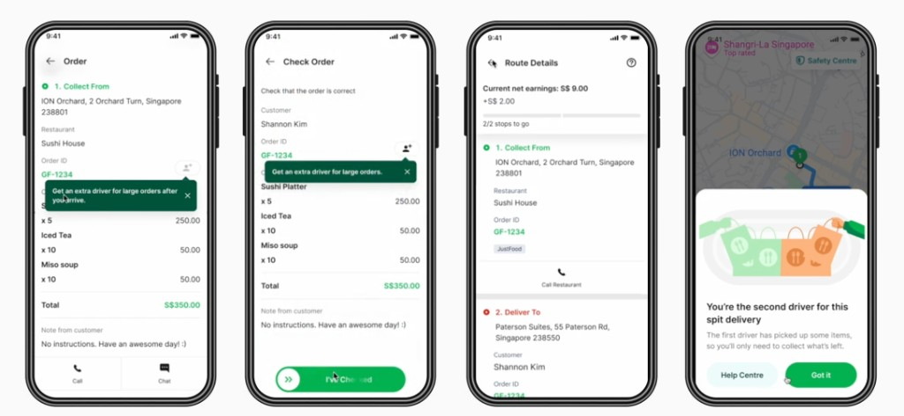
App
Grab Driver app
My role
I owned this project end to end, from problem framing through ship.
Product design; problem solving; interactive prototyping; user research & testing; stakeholder management.
Context
Ongoing challenge in deliveries
Large orders remain a long-standing pain point for drivers, often leading to cancellations when they discover at the merchant that the order is too big to carry. Improving large order prediction is key, but until this capability matures, fulfilment rates will remain low.
Existing large order tagging vs reality
Large orders are identified based on either weight or basket size, with definitions varying by country. To manage complexity during batching, thresholds are set to prevent grouped orders from being classified as large.
Two sample receipts illustrate the gap: the more expensive order is not always the physically larger one. The system makes this call millions of times a day across a large catalogue — yet we often do not know exact weight, dimensions, or how the restaurant will package the order.
Reference thresholds by city
City
Basket size (reference)
Total weight (reference)
Singapore
SGD 50
10kg
Bangkok
THB 100
18kg
Jakarta
IDR 1K
15kg
Klang Valley
MYR 30
10kg
Metro Manila
PHP 2000
15kg
Ho Chi Minh
Undefined
100kg
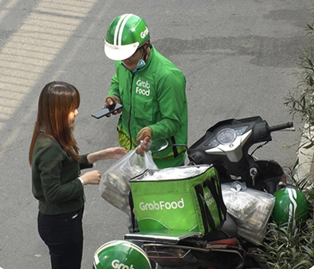
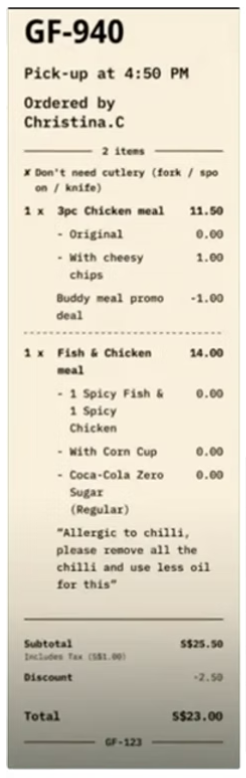
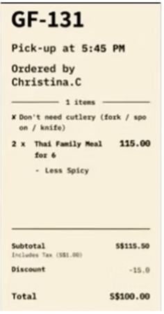
Allocation logic vs reality
Order received
LO detection algo+ weight handling
Normal orders
Large orders
Fulfilment strategy prioritises 4-wheeled vehicles for large orders (up to three attempts), then falls back to 2-wheelers and walkers. In Southeast Asia, 4W supply for Food and Mart is extremely limited: only 7% of large orders go to cars; 93% go to 2W riders. Large-order fulfilment was about 5 percentage points lower than non-large (July 2021), with about 2pp higher cancellations.
Large orders were 0.8% of Food orders with 89.24% fulfilment (~5% below non-large). In Mart, large orders were 3.13% of orders with 78.88% fulfilment (~11.12% below non-large). Unallocation and pre-allocation cancellations mattered; driver cancellations were ~1% higher for large orders in both categories.
Food — Jun’22 to Nov’22
Metric
Large order
Non-large order
Number of orders
4,545,582 (0.8%)
519,786,411
AOV
$28.20
$5.78
FR (fulfilment rate)
89.24%
94.82%
Unallocation
5.00%
2.06%
DAX cancellations
1.80%
0.89%
MEX cancellations
0.75%
0.58%
PAX + operator pre-allocation cancellations
2.73%
1.31%
Mart — Jun’22 to Nov’22
Metric
Large order
Non-large order
Number of orders
618,020 (3.13%)
19,700,122
AOV
$29.58
$10.38
FR (fulfilment rate)
78.88%
90.5%
Unallocation
11.67%
2.52%
DAX cancellations
2.89%
1.84%
MEX cancellations
2.23%
3.46%
PAX + operator pre-allocation cancellations
2.5%
0.9%
pp = percentage points.
Feedback
“Big orders are often undesirable because they may require additional trips.”
“We sometimes have to make multiple trips or cancel the job entirely, which is not ideal.”
“I often can’t carry large orders due to their size and weight. This either forces me to cancel the job, wasting time and effort or risk my safety trying to deliver items that aren’t suited for my vehicle. Currently, Grab doesn’t offer an alternative way for us to handle these orders effectively.”
Large orders pose major challenges for two-wheeled drivers: fewer viable jobs, lower AOV/GMV, and safety risks such as balance issues or damaged goods — hurting driver experience and customer satisfaction.
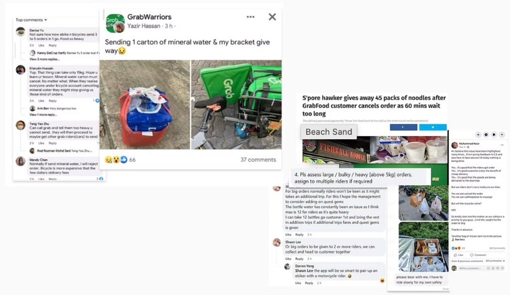
Opportunity
Despite the challenges, large orders carry high value: more items, higher AOV, and roughly triple the revenue of regular orders — driving GMV and margins. In Jan 2023, regional cancellation rates for large orders were significantly higher than “wait too long” cancellations.
Potential fulfilment rate gain
Mart: +11.62pp
Food: +5.6pp
Overall: ~2–3pp improvement
Potential GMV uplift from lower cancellations
Mart: ~$480K/mo
Food: ~$1.689M/mo
Improve driver sentiment
Minimise safety risks
Ease delivery load for driver partners
Reduce idle time from cancellations
Hypothesis
HMW improve the large order experience for 2W riders through clearer guidance and support?
Ideations
Driver-initiated split (MVP)
MVP approach to overcome challenges
Relies on drivers’ own judgment of capacity rather than the system alone.
Drivers can request a second driver if they cannot carry the entire order.
Minimises CTS by splitting only when necessary.
Incremental CTS from second drivers ~S$85K/mo.
CTS = Cost to Serve (driver pay).
Grab-initiated split
Orders automatically divided and assigned to two drivers. Challenges: low accuracy in large-order detection and capacity estimation.
Tagging improvements take time.
False positives drive high CTS — incremental CTS from second drivers ~S$920K/mo.
MVP approach
The MVP approach enables drivers to request assistance from another driver when they can’t complete a large order alone.
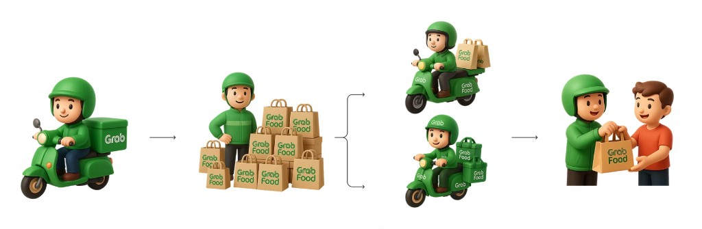
Competitive benchmark & comparative study
Foodpanda
On the driver side, a comparative study of Foodpanda’s large order experience revealed that:
Drivers can request assistance by initiating a split (photo + help icon).
Limited clarity on which items each driver should pick up — drivers default to what fits in bags.
Pickup instructions clarify primary vs secondary roles; multiple riders allowed.
No dedicated large-order flow — order detail depth appears after accept.
Room to improve coordination and clarity for large, multi-part deliveries.
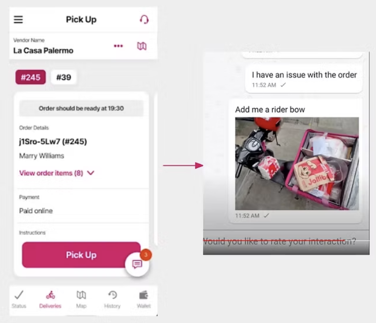
Driver-oriented split
Primary driver taps headphone icon to request another rider.
Driver sends a photo when requesting the split.
Not told item-level split — pick up what fits.
Primary vs secondary clear from pickup instructions.
Can be two riders or more.
DoorDash & Deliveroo
Western delivery apps often surface large, high-pay orders from the offer screen, for example a “High pay order!” banner, item count and distance, and a payout band, which reinforces value through pickup and completion. For the second rider, pickup copy can state clearly that another courier is helping on a large order so roles stay obvious.
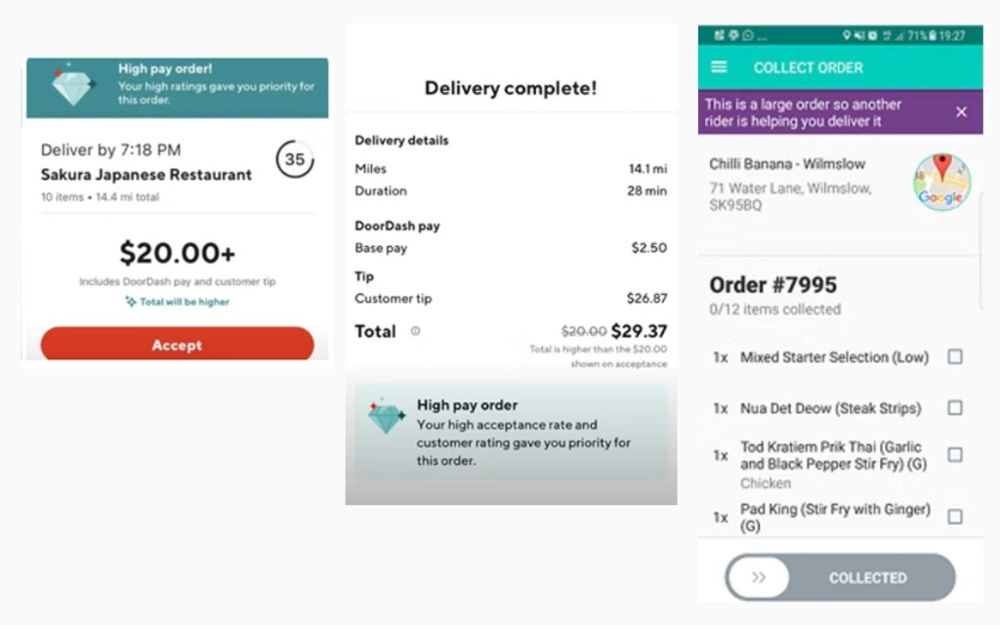
Behaviour findings — research
We tested early concepts of the Large Order feature. While it shows strong potential, key challenges must be addressed for successful adoption:
Key objectives
Discover any behaviour that DAX (driver-partners) had toward this Large Order feature.
Validate the usability of the Large Order design.
Validate any concept within the Large Order design.
Research details
Method: 1:1 interviews with five 2W DAX in the UX Lab.
Country of research: Singapore.
Time period: 31 March 2023.
Our UT session in the UX Lab with 2W DAX.
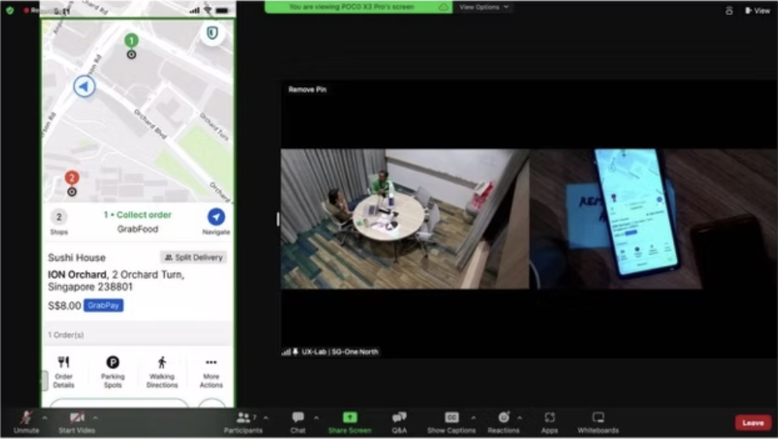
Behaviour findings — discoverability & trust
Discoverability
Drivers often review merchant name, items, value, and bulky flags before accepting — but many overlook Request Extra Driver under More actions and on collection.
Direction:Surface that entry earlier so partners notice it before they cancel.
Trust
The same flows raised fear of unfair splits and sabotage when “half” of an order isn’t defined clearly.
Stories from other platforms amplified that worry (quick earnings vs teamwork).
Design challenge:Prevent abuse while keeping splits understandable — tie clarity to hand-off, bags, and roles.
Research & design feedback
Usability testing tied these themes into one thread: from whether drivers understood earnings on the way in, to how clear each in-flow screen was once they committed. On Path A (after arrive, blue card) and Path B (More actions), reassurance that pay wouldn’t drop rarely registered early enough — so the feature felt riskier than it was.
On “Need help with a large order?”, a tall stepper read as “wait for the system” while the real next step was tapping Request for Driver. We reframed hierarchy so the primary action owned the page. In the searching / waiting state, Design A (bullets under the active timeline step) beat Design B (small grey copy under the title) — drivers missed animated subcopy and needed scannable bullets.
After match, showing the second driver’s name and photo helped prove a split to customers but opened privacy and misuse concerns; we weighed reducing or hiding identity. Photo and receipt steps needed clearer purpose (who the proof is for) and a path for one receipt across two riders, plus honesty about merchant confusion when bags aren’t marked. On route, “Main driver” implied full liability; long waits at the merchant eroded patience — we pushed neutral role labels and realistic wait expectations.
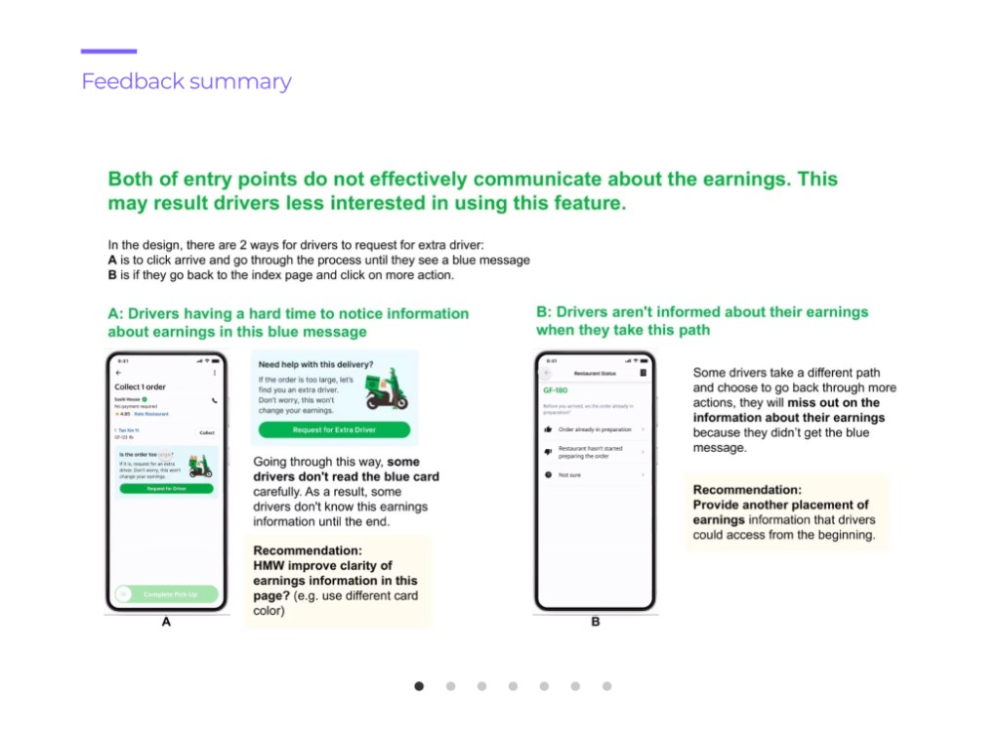
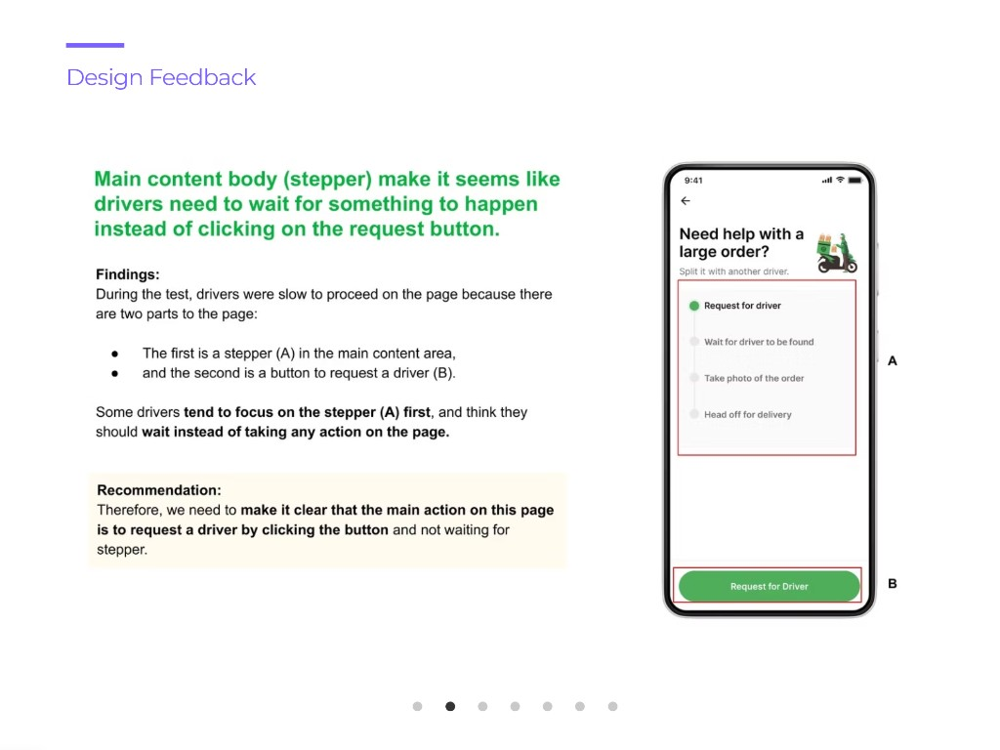
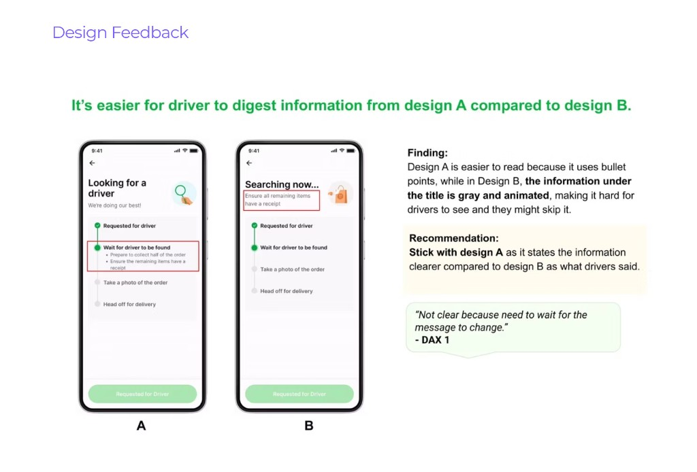
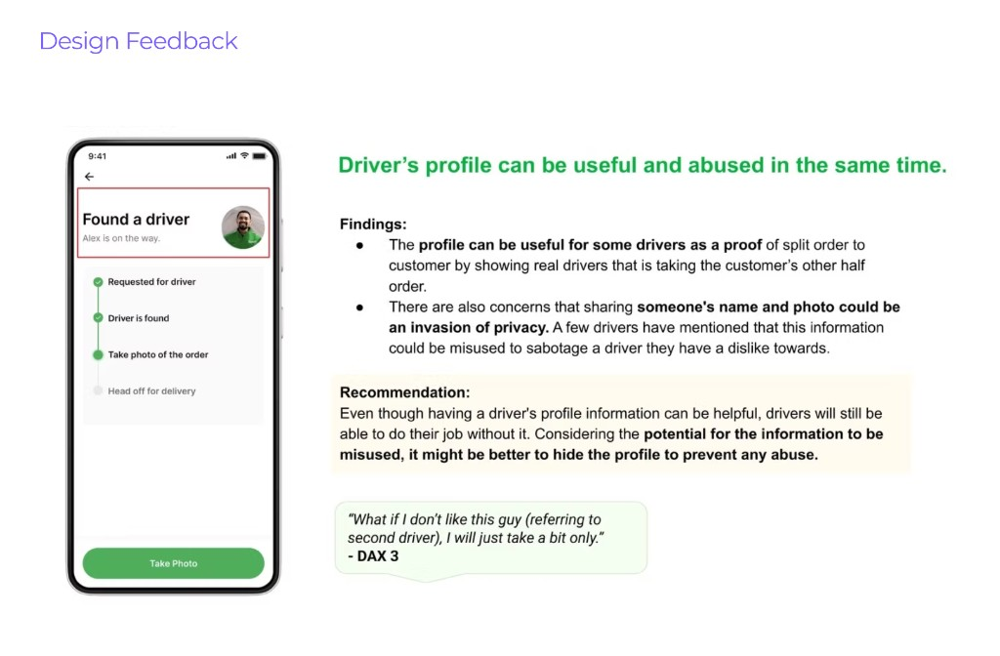
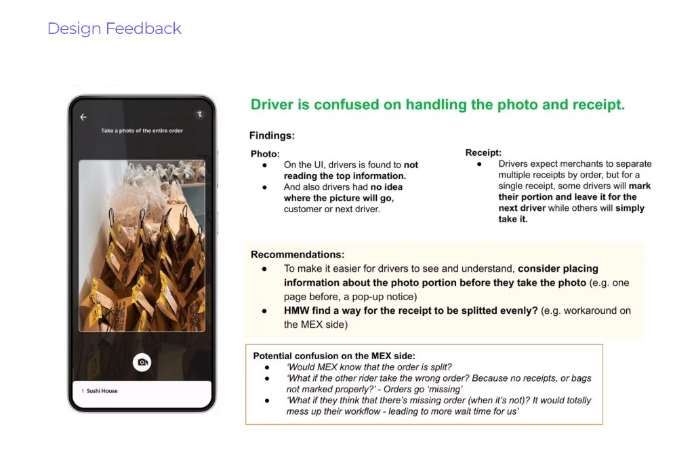
Insight: Drivers don’t want to wait at the merchant for the other rider, and “main driver” reads as owning liability for the entire order.
Findings
Most drivers dislike waiting for the second driver at the merchant.
Some will wait about 15–20 minutes before it feels like wasted time.
The “main driver” label feels like being in charge; if the second driver fails, they worry they’ll be held responsible.
Recommendation: Rephrase “main driver” with more neutral role wording.
“Main driver will responsible on whole order.”
— DAX 3
“I will wait maximum of 15 mins, above that will just waste my time.”
— DAX 5
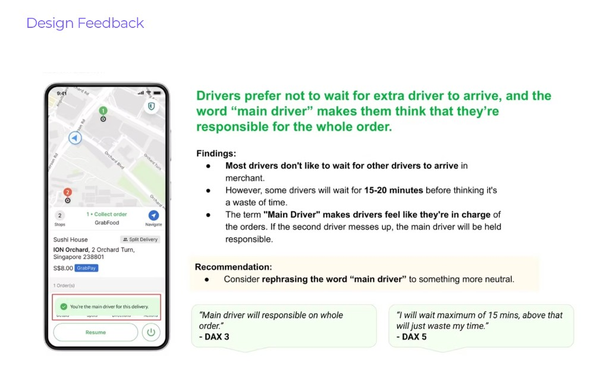
Design feedback — when allocation fails
Insight: Drivers would give up instead of reallocate if the first allocation fails — more time feels wasted.
Findings
Drivers don’t want to wait without clarity on what to do next. They cancel, or some deliver by themselves in two or more trips.
If they self-deliver across multiple trips, they expect compensation.
Today’s flow: complete trips first (while updating the customer), then claim through CS.
HMW give a clear action when the extra driver can’t be found? (e.g. a direct path to cancel, or options and copy for multi-trip self-delivery.)
“I will close, because no one wants to pick so why waste time.”
— DAX 2
Key insights
Skipped features
Some drivers pre-check orders via merchant name and order details before accepting — and can bypass Request Extra Driver under More actions and on order collection.
Trust and sabotage
Riders worry about splits when “half” isn’t defined by the system; some fear the first driver takes one bag and leaves the rest. Stories from other platforms reinforce that some riders prioritise quick earnings over teamwork.
Second-driver coordination
Wait time: many won’t wait more than ~15 minutes for a second driver.
Fallbacks: unclear next steps if no second driver (cancel, multi-trip, compensation).
Privacy: showing profiles can increase tension in conflicts.
Large order discovery & key principles
Determine three entry points and flows from driver behaviour
Streamline, hassle-free request flow
No proof or validation required to confirm a large order.
Once submitted, the system handles follow-through — no extra driver follow-ups required.
Avoid wasted time waiting for assignment mechanics.
Light-touch guidance
Encourage the first driver to take about half and help secure a receipt for the second driver — framed as benefits, not hard requirements.
Use tooltips to familiarise drivers with the icon and entry points.
Entry point 1 — before arriving
During peak hours or from merchant name, drivers often pre-check order size on Order details — some cancel early. Tooltip: “Get an extra driver for large orders after you arrive.” (Disabled before arrival; active after.)
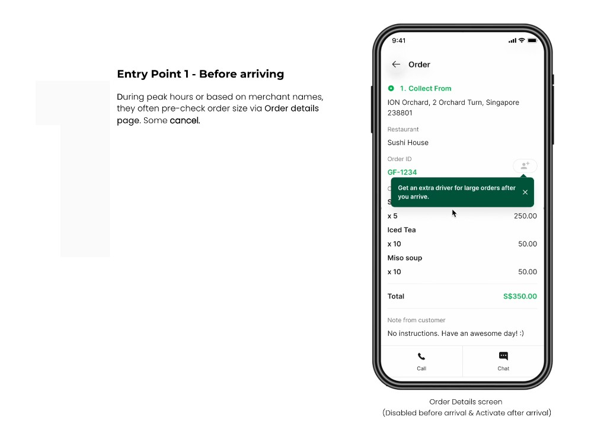
Entry point 2 — cancellation
Drivers may cancel before or after arriving. Mitigation: when the order may be too large, surface Request for Extra Driver in the cancel path.
Modal: “Why not get an extra driver?” — “You’ll get the same earnings, and only need to deliver half of the order.” Primary: Request for Extra Driver · Secondary: Cancel anyway.
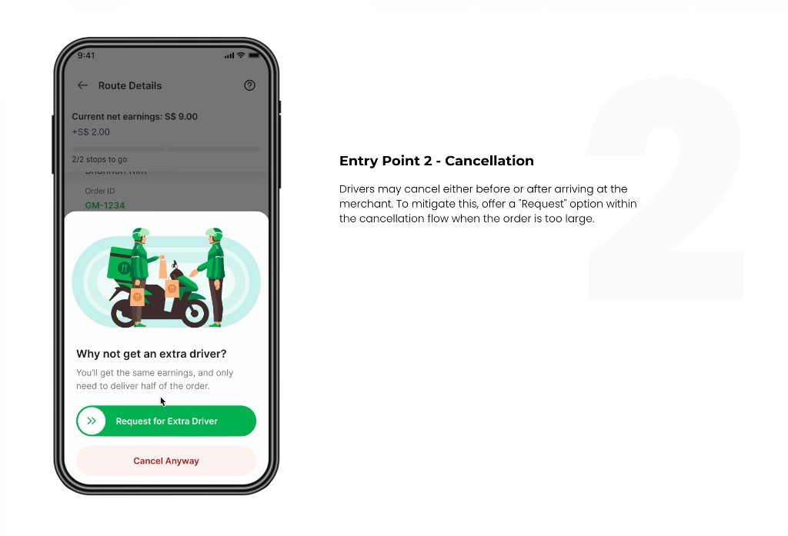
Entry point 3 — after arriving
After Arrived, on Check order, drivers may see volume they cannot carry; some back out and cancel. Tooltip on the extra-driver icon: “Get an extra driver for large orders.” Primary: I’ve checked.
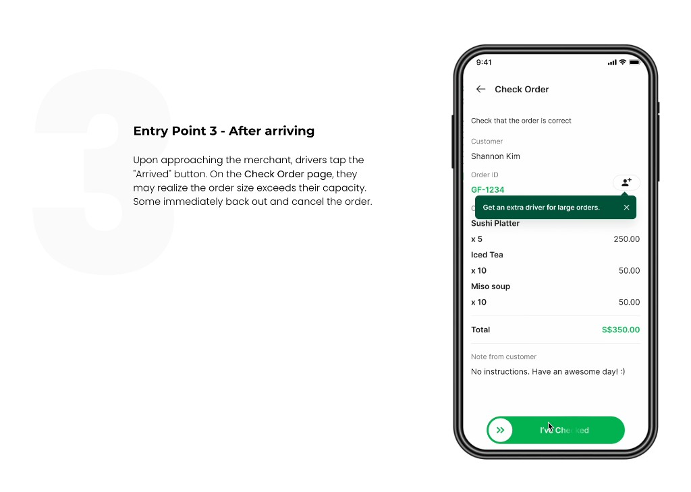
Second driver experience
Second driver benefit: minimal wait — order ready for pickup on arrival. Always-on copy: you are the second driver; the first driver already collected part of the order; you collect what’s left. Sheet: “You’re the second driver for this split delivery” · Help Centre · Got it.
To reduce sabotage concerns, only the second driver could flag feedback if the order was still too large.
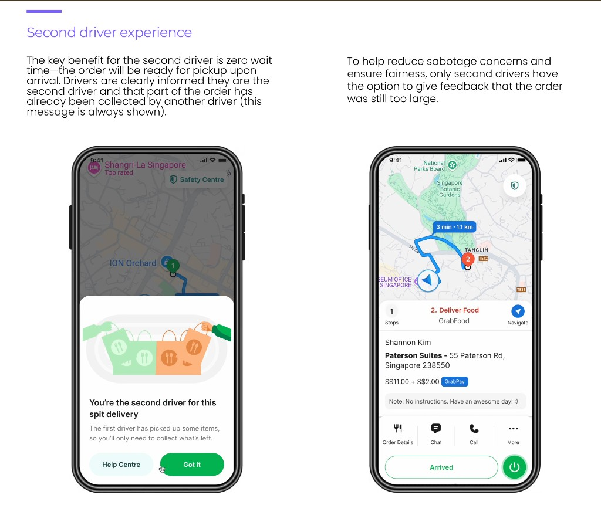
Impact
Highlights of Large Order
Regional fulfilment rate+1.3%
Cancellation rate−1.5%
The work took rounds of brainstorming and alignment with many stakeholders — entry points, visibility, and a clear story for drivers. The shipped experience reduced cancels drivers couldn’t sustain and eased daily overload; it touched customers, merchants, and drivers. Personally it deepened empathy for partners on the ground.
Team
This project was made possible with the combined effort from:
PM: Utkarsh Mishra, Tze Teng Lim, Ayush Singhal
Designer: Hayeon Kim (Driver), Melan Yapa (Consumer)
Content: Amadea Ng, Suharti Surnani, Daniel Loy
Research: Yingki Lo, Renaldi
Analytics: Xuejing Song, Zheng Yang Lee
PMM: Jennwei Hee; Isabel Martin
Engineers: Gokul GS, Ninh Dang, Raymond Djajalaksana, Boon Joon Tan, Qiu Gaungju Yi